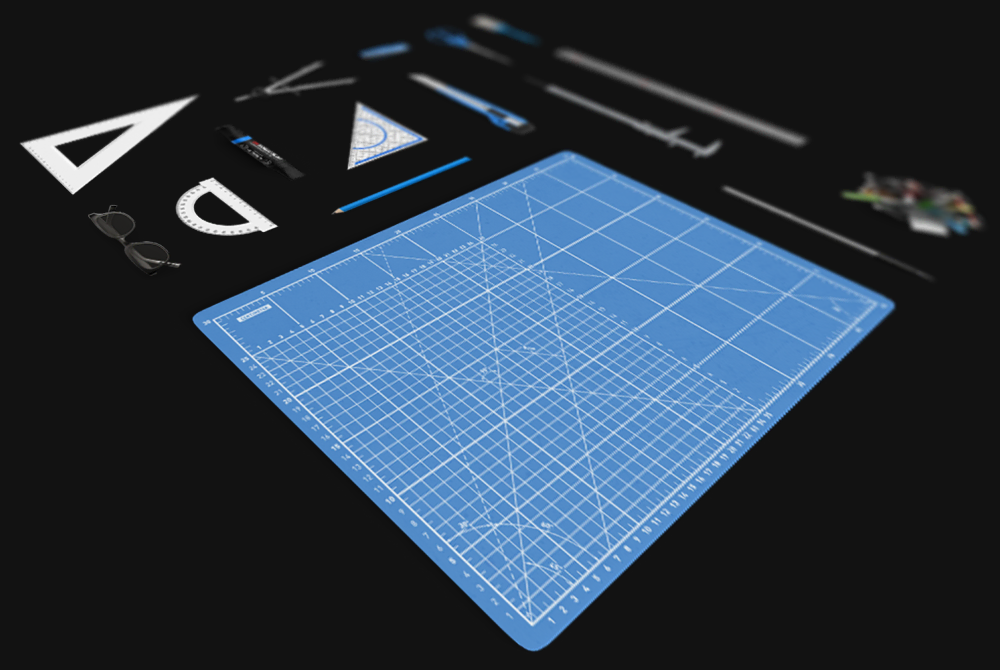

Arrange Master Documentation
Current Version: 1.2.2
- Installation
- Upgrading & Complete Uninstallation
- Introduction
- The Main Interface
- Preparing Items for Arrangement
- The Arrangement Workflow: Understanding Sessions
- Layout Methods
- Overflow Placement
- Common Features & Best Practices
- Changelog
1. Installation
Windows Installer (Recommended)
For Windows users, the easiest and most reliable way to install Arrange Master is by using the provided installer.
- Unzip the archive you downloaded after purchase.
- Open the folder named
Windows Install. - Run the
ArrangeMaster-v1.x.x-Setup.exefile. - Follow the on-screen instructions. The installation is fully automatic and performs necessary registry configurations for the user.
ZXP Installers (macOS & Advanced Windows)
To install the ArrangeMaster.zxp file manually, you need a dedicated extension manager application.
Option 1: Anastasiy’s Extension Manager (Recommended)
This is the most popular and reliable tool for managing Adobe extensions.
- Download and install Anastasiy’s Extension Manager from: install.anastasiy.com
- Launch the Extension Manager.
- Simply drag and drop your
ArrangeMaster.zxpfile onto the Extension Manager window. - The installation will complete automatically.
{kind=link}
Option 2: ZXPInstaller
A great alternative if you encounter any issues with the first option.
- Download and install ZXPInstaller from: zxpinstaller.com
- Launch ZXPInstaller.
- Drag and drop your
ArrangeMaster.zxpfile onto its window to install.
Option 3: aescripts + aeplugins Manager App
If the other installers cannot detect your Adobe applications for any reason, the aescripts manager is a powerful alternative that often succeeds.
- Download and install the manager app from: aescripts.com/learn/aescripts-aeplugins-manager-app/
- Launch the app and log in or create an account.
- In the top menu, go to
File > Install ZXP. - Select your
ArrangeMaster.zxpfile to install it.
Finding the Panel in Illustrator
After the installation is complete, you must restart Adobe Illustrator.
Once restarted, you can find the panel in the main menu under:Window > Extensions > Arrange Master
{kind=link}
2. Upgrading & Complete Uninstallation
When installing a new major version of Arrange Master, it is strictly recommended to completely remove the old version first to prevent file conflicts within the Adobe CEP engine.
For Windows Installer Users:
- Open Windows Settings > Apps > Installed apps.
- Find "Arrange Master", click the menu, and select Uninstall.
- Alternatively, navigate to your Start Menu, find the Arrange Master folder, and run the uninstaller.
For ZXP Manager Users (macOS & Windows):
Open Anastasiy’s Extension Manager or aeplugins Manager App, select Arrange Master from the list of Illustrator extensions, and click the Remove button. ZXPInstaller does not have an automatic uninstall feature, so you will have to manually check all possible CEP extension locations.
Manual Deletion (If all else fails):
If the plugin panel persists or the installer throws an error, you must manually delete the extension folder. Close Adobe Illustrator and delete the com.andrewrybalko.arrangemaster folder located in the following directories:
- Windows:
C:\Users\YOUR_USERNAME\AppData\Roaming\Adobe\CEP\extensions\
C:\Program Files (x86)\Common Files\Adobe\CEP\extensions\ - macOS:
~/Library/Application Support/Adobe/CEP/extensions/
/Library/Application Support/Adobe/CEP/extensions/
3. Introduction
Welcome to Arrange Master! This guide will walk you through all the features of the plugin to help you transform chaotic object sets into perfectly organized compositions.
Core Principles:
- The Container: The largest object in your selection is automatically treated as the container.
- The Items: All other selected objects are treated as items to be arranged inside the container.
- Non-Destructive Environment: Arrange Master operates entirely within a strict Session-Based Workflow. Original objects are hidden and preserved, while algorithmic operations are performed only on generated duplicates. (See Section 6 for operational details).
4. The Main Interface
The interface is modular, exposing settings only relevant to the currently selected layout method.
{kind=link}
- Method Icons: At the top of the panel, you will find four icons. Each icon represents a different arrangement algorithm. Clicking an icon selects that method and reveals its specific settings below.
- Dynamic Settings Area: This central part of the panel changes based on the selected method, showing only the relevant controls for your current task.
- Action Buttons & Status Bar: The bottom section contains the main control buttons (
Arrange,Randomize,Ok,Cancel) and a status bar that provides feedback on the current operation.
5. Preparing Items for Arrangement
The efficiency of the layout depends heavily on how your artwork is structured before initialization.
{kind=link}
Supported Object Types
Arrange Master processes standard Illustrator objects including Paths, Compound Paths, Groups, Text Objects, Symbols, and Raster Images (Embedded or Linked). The plugin uses robust fallback mechanisms to correctly identify bounds even for complex Linked objects or items with missing visible bounds.
Preparation for Standard Methods
Standard algorithms calculate placement based exclusively on the Bounding Boxes (rectangular perimeter) of the items.
- Gaps: If an object has a complex shape with internal empty space (e.g., an "L" shaped desk), the standard algorithm treats that empty space as solid matter.
- Optimization: To achieve higher density in standard modes, manually group sub-elements into solid rectangular blocks before arranging them.
Preparation for Dense Packing (True-Shape Nesting)
Dense Packing bypasses bounding boxes and analyzes the True Vector Geometry of the object.
- Vector Only: Dense Packing strictly requires mathematical path data. Raster images are NOT supported in this mode. If you attempt to use Raster items with Dense Packing enabled, the plugin will throw an error or skip them.
6. The Arrangement Workflow: Understanding Sessions
Arrange Master uses a Session-Based Workflow to give you maximum flexibility and control. A session is a safe, temporary workspace that protects your original objects.
Starting a Session:
A session begins the very first time you click the Arrange button after making a selection. At this moment, Arrange Master does two things:
- It securely hides your original selected items.
- It creates temporary working copies of your items to perform all arrangement operations on.
This ensures your original work is always safe and can be restored at any time.
{kind=link}
Working within a Session:
Once a session is active, you can freely experiment:
- Clicking
Arrangeagain will re-apply the layout with any new settings you've chosen. - Clicking
Randomizewill re-apply the layout using the same settings but with a different random order for the largest items, giving you a new variation instantly.
Why is this important? Until you click Ok or Cancel, your original items remain hidden and the arranged items are temporary. Properly ending the session ensures your document remains clean and contains only the objects you intend to keep.
Note: Switching to a different Illustrator document will force the plugin to auto-terminate the session to prevent data corruption.
7. Layout Methods
Grid Layout
This method arranges items in a structured, uniform grid. It is perfect for organizing icon sets or generating complex patterns.
{kind=link}
Standard Settings:
- Rows & Columns: Defines the dimensions of the grid.
- Vary Rotation: Adds a degree of randomness by rotating each item. For example: a value of
90°will rotate each item by a random angle between -90° and +90°. - Vary Size: Randomly scales each item. A value of
x2will scale each item by a random factor between x1 (original size) and x2. - Offset Odd/Even Rows: Creates a staggered, "checkerboard" pattern by shifting odd (1st, 3rd...) or even (2nd, 4th...) rows to the right by half a cell's width.
- Size Limit OFF: By default, items larger than a single grid cell are considered "overflow". Check this box to allow larger items to be placed, centered in their cell, even if they overlap.
Special Mode: Single Item Fill
{kind=link}
When the Single Item Fill checkbox is enabled, the panel switches to a special mode. Instead of arranging your selection, it fills the container with as many copies of a single selected item as possible. This mode secretly uses the highly efficient Skyline algorithm for a dense, organic fill.
- Min. Spacing: Controls the minimum distance between the duplicated items.
- Allow 90° turn: Allows the item to be rotated for a better fit.
Knolling Layout
Based on the "Maximal Empty Rectangles" algorithm, this method packs items with extreme efficiency and order. It's ideal for creating dense, visually satisfying compositions that look meticulously organized.
{kind=link}
Settings:
- Fill Direction: Sets the primary direction of the packing flow (
Left-to-RightorRight-to-Left). - Min. Spacing: The minimum distance guaranteed between any two items.
- Fit to Container: An intelligent auto-resizing feature. It mathematically calculates the total area of your items and proportionally scales them up or down so they perfectly fill the container's usable space.
- Efficiency Factor: (Active only when "Fit to Container" is ON). A stepper from 0.75 to 1.00 that determines how tight the scaling calculation should be. Lower values leave more breathing room, while higher values scale items larger for maximum density.
- Outer Padding OFF: By default, a padding equal to the "Min. Spacing" is applied between items and the container's edge. Check this box to disable it, allowing items to touch the container's border.
- Allow 90° turn: Allows the algorithm to rotate items by 90° if it results in a better fit.
Greedy Layout (and Dense Packing)
This is a powerful and versatile packing method. In its standard form, it uses a high-density candidate grid for fast and effective layouts based on bounding boxes. When Dense Packing is enabled, it transforms into an advanced true-shape nesting engine.
{kind=link}
Standard Settings:
- Fill Direction: Sets the packing direction (
Top-DownorBottom-Up). - Min. Spacing: The minimum distance between any two items.
- Outer Padding OFF: Disables the padding between items and the container's edge.
- Allow 90° turn: Allows items to be rotated orthogonally (90° or 0°, 90°, 180°, 270° in Dense Packing) to find a better fit.
Dense Packing (True-Shape Nesting):
When the Dense Packing checkbox is enabled, Arrange Master switches to a true-shape nesting engine. This mode analyzes the actual shape of your vector objects - including gaps between and holes within them - and places items with maximum density. It uses a Two-Pass architecture: first placing large objects to form the landscape, then filling the remaining cavities with smaller details.
{kind=link}
While our RLE Math Engine is highly optimized, processing 100+ complex vector shapes with 'Free Rotation' enabled may take from seconds to several minutes and briefly freeze the Illustrator interface. At just $39 - roughly the cost of a single meter of premium vinyl wrap - Arrange Master pushes the absolute boundaries of CEP architecture, providing a powerful alternative to industrial plugins that quickly pays for itself in saved material and time.
{kind=link}
Note: This mode is computationally intensive and works with vector objects only.
- Analysis Precision: This setting controls the grid resolution of the scanning engine.
- Value of 1 to 3: provide a highly detailed scan, resulting in perfect contour hugging and tighter fits, but process slower.
- Value of 4 to 10+: provide much faster performance but analyze the shapes in coarser "blocks".
- Free Rotation: (Active only when "Allow 90° turn" is OFF). Unlocks arbitrary 360° rotation in 15-degree steps. The engine will evaluate 24 different angles for every object to achieve maximum nesting density. It features a "Rational Fallback" logic: it prioritizes straight, orthogonal placement and only tilts an object if it mathematically saves significant space.
- Align Final Edge: An optional post-processing step that cleans up the layout by aligning the final "ragged" edge of items for a tidier result.
Shape Respect Layout
This method arranges items inside any non-rectangular, complex shape, including text outlines and shapes with holes.
{kind=link}
Settings:
- Fill Direction: Sets the placement priority (
Top-DownorBottom-Up). Only available in Fast and Accurate modes. - Min. Spacing: The minimum distance between any two items.
- Vary Rotation: Adds a degree of organic randomness by rotating each item before placement. For example: a value of
90°will rotate each item by a random angle between -90° and +90°. - Outer Padding OFF: Disables padding between items and the container's edge.
- Allow 90° turn: Allows items to be rotated for a better fit.
- Accurate Mode: Uses a high-quality, grid-based algorithm for precise, ordered placement. Warning: This can be slow with a large number of items.
- Chaotic Mode: Uses a fast, random placement algorithm to create organic, natural-looking patterns. When this is active,
Fill Directionis ignored.
{kind=link}
If neither Accurate Mode nor Chaotic Mode is checked, the plugin uses its default "Fast" mode, which provides a balance of speed and quality.
8. Overflow Placement: Handling Unplaced Items
Arrange Master never loses your work. If an item cannot fit inside the container (either because there is no space, or it exceeds the cell size in Grid Layout), it is considered an "overflow" item.
{kind=link}
All overflow items are automatically placed in a single row directly above the container. They are arranged according to these rules:
- They are sorted by height, from tallest to shortest.
- They are aligned along their bottom edge.
- A consistent spacing is maintained between them.
How to fit overflow items:
If you have items in the overflow area that you want inside the container, try one of these solutions:
- Increase the size of the container object.
- Decrease the "Min. Spacing" value in the panel settings.
- For Grid Layout, increase the number of Rows/Columns or enable "Size Limit OFF".
- For Greedy Layout, try enabling Dense Packing for a more efficient fit.
- For Knolling Layout, turn on Fit to Container.
Then, simply click Arrange again to re-run the layout.
9. Common Features & Best Practices
- Automatic Container Detection: You don't need to tell Arrange Master which object is the container. It automatically detects the largest object in your selection.
- Automatic Z-Order: The container is always sent to the back, ensuring all arranged items appear on top of it.
- Freedom during a Session: While a session is active, you are free to interact with your document. You can:
- Deselect everything to get a better view.
- Zoom and pan around your artboard.
- Manually resize or recolor the container object. After making changes, just click
Arrangeagain to see how the layout adapts.
- Smart Caching for Dense Packing: When using Dense Packing, the plugin utilizes a high-performance buffer that stores a temporary matrix of your objects in memory. This means that after the initial
Arrangepass, subsequent clicks onArrangeorRandomizewill be significantly faster. Note: This matrix cache automatically resets if you change the Analysis Precision parameter or switch to a different layout method. - Iterative Container Tuning: You can treat the container as a live bounding box. Feel free to shrink or expand your container object from the bottom or right edges to refine your composition's density after the next click on the Arrange button. If you make the container tighter, the plugin will intelligently push objects "out" into the Overflow area. Simply expand the container slightly to the right or bottom to reclaim those items back into the layout.
{kind=link}
10. Changelog
Version 1.2.2 (March 31, 2026)
Maintenance update.
- Dense Packing Optimization. Improved packing density and more accurate response to "Min. Spacing" settings.
Version 1.2.1 (March 19, 2026)
Maintenance update.
- Universal Clipping Mask Support. All arrangement methods (Grid, Knolling, Greedy and Shape Respect) now correctly process objects with Clipping Masks. The engine no longer considers hidden elements outside the mask area, focusing strictly on the mask's true bounding box.
Version 1.2.0 (March 1, 2026)
A massive update transforming the plugin into an industrial-grade nesting engine, featuring entirely new mathematics, real-time UI feedback, and intelligent scaling.
- New Feature: Visual Progress Bar. The Status Bar now features a smooth, animated background progress filler. Long operations like Dense Packing now provide clear visual feedback that the engine is working.
- New Feature: Intelligent Auto-Resizing ("Fit to Container"). Knolling Layout now includes a powerful math engine that solves a quadratic equation to perfectly scale your items up or down to fill 100% of the container's usable area, automatically accounting for Min. Spacing. Includes a dynamic "Efficiency Factor" stepper (0.75 - 1.00) for tight control over the scaling aggressiveness.
- New Feature: Free Rotation (360°). Dense Packing now supports true arbitrary rotation. The algorithm evaluates 24 different angles (15° steps) for every single item to achieve maximum density. It uses "Rational Fallback" logic: items stay orthogonally straight by default, and only tilt if it mathematically saves significant space.
- Architecture Upgrade: True-Shape Engine v2. The Dense Packing algorithm has been entirely rebuilt:
- Math Engine Rasterization: Completely bypasses Illustrator's infamous bounding box inflation bug. Objects are now rotated mathematically in memory, ensuring perfect contour hugging without false collisions.
- Two-Pass Placement: The system now acts like an intelligent mason: Pass 1 places large objects to build the structural landscape, and Pass 2 executes a fine-search to pour tiny objects into the remaining gaps.
- Major Bug Fix: Fixed a bug with memory leaks and uneven filling of cells when using Offset Odd/Even Rows in Grid Layout.
Version 1.1.2 (November 22, 2025)
This update focuses on maximizing packing density, refining algorithm precision, and unifying rotation logic for Dense Packing.
- Dense Packing Optimization & Quality Boost. The True-Shape nesting engine received a major upgrade. Geometry decomposition now merges adjacent sectors, speeding up calculations by 5-10x. The "Safety Valve" (fallback to coarse packing) has been removed, ensuring the algorithm always performs a full-quality analysis regardless of complexity.
- Anti-Overlap System. Fixed issues where objects could overlap at low "Min. Spacing" settings. The rasterizer now uses "Center Sampling" to detect thin geometry, and a dynamic safety padding system prevents intersections caused by grid quantization. Default Analysis Precision is now set to 10.
- Enhanced Rotation Logic. The "Allow 90° turn" feature now evaluates three orientations (0°, 90°, and 270°) instead of just two, providing better fitting opportunities in Dense Packing.
- Grid Layout Fixes. Fixed a coordinate drift issue where objects would shift visually when using "Size Limit OFF" combined with large "Vary Size" values. Scaling now occurs relative to object centers to ensure perfect alignment.
- Raster & Placed Item Support. Fixed "Select at least 2 objects" errors when working with images. The plugin now includes robust fallback mechanisms to correctly detect bounds for Raster and Placed items.
Version 1.1.1 (October 17, 2025)
This is a major update focused on radical algorithm improvements, new features, and overall stability, making Arrange Master a truly professional-grade tool.
- Complete Overhaul: Dense Packing Algorithm. The true-shape nesting engine has been rewritten from the ground up. It now uses a "Global Free Space Analysis" architecture, allowing it to see and utilize not only holes inside objects but also the complex empty spaces that form between multiple objects. This results in significantly denser and more intelligent layouts.
- New Feature: Dynamic Simplification. The Dense Packing algorithm is now equipped with a powerful safety valve ("Pre-emptive Complexity Control") that detects and prevents computational explosions. This makes the algorithm robust and stable, eliminating freezes even on extremely complex layouts or with high 'Analysis Precision' settings.
- New Feature: Single Item Fill. The Grid Layout panel now includes a powerful mode to fill the container with copies of a single selected item, using the efficient Skyline algorithm for a dense, organic pattern.
- New Feature: Staggered Grid Offsets. The Grid Layout now includes "Offset Even/Odd Rows" options to easily create staggered, checkerboard-style patterns.
- Major Bug Fix: Dense Packing "Bottom-Up" Mode. The "Bottom-Up" direction for Dense Packing has been completely fixed using a robust "Flip Trick" architecture. It now produces a perfectly mirrored, high-quality layout that correctly utilizes all internal and external cavities.
- UI/UX Improvements: The Grid and Greedy layout panels have been significantly redesigned for better clarity, compactness, and usability. Controls are now contextually disabled/enabled based on the selected mode.
- Infrastructure: Windows & macOS Installers. The project now includes a professional, digitally-signed installer for Windows and a clear manual installation package for macOS, ensuring a smooth setup process for all users.
Version 1.0.1 (October 10, 2025)
This update focuses on adding powerful new features for organic layouts and significant performance optimizations.
- New Feature: Dense Packing ("True-Shape Nesting"). The Greedy Layout now includes an advanced mode that analyzes the true vector shape of objects, allowing for incredibly tight and natural-looking packing that fills concave areas.
- New Feature: Analysis Precision. A new control for Dense Packing that allows users to balance performance versus packing quality.
- New Feature: Align Final Edge. An optional post-processing step for Greedy and Dense Packing modes to clean up the final "ragged" edge of the layout.
- New Feature: Vary Rotation for Shape Respect. The Shape Respect layout now includes a "Vary Rotation" setting to add organic randomness to placements inside complex shapes.
- Optimization: The Dense Packing algorithm now caches the complex geometry analysis. Subsequent clicks on "Arrange" or "Randomize" within the same session are now significantly faster.
- UI/UX Improvements: The user interface for all panels has been polished for better alignment, spacing, and clarity. Tooltips have been updated to be more descriptive.
- Bug Fixes: Fixed numerous bugs related to session management, object transformation, and UI rendering to improve overall stability.
Version 1.0.0 (September 15, 2025)
- Initial public release.
- Introduced the four core layout methods: Grid, Knolling, Greedy, and Shape Respect.
- Established the robust session-based workflow with "Ok" and "Cancel" states to protect user's original artwork.
- Implemented basic controls for each layout method, including spacing, rotation, and fill direction.